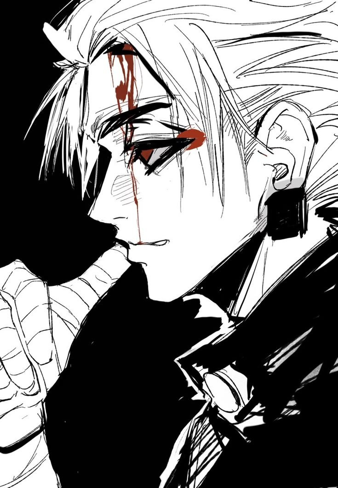

Livre d'heures · Le Dédale
Croc
il ne dit rien.

Chapitre I · De la créature
Identité
[SYSTÈME] Fiche // Personnage
Registre
Du corps
Chapitre II · De l'âme
Psychologie
[SYSTÈME] Fiche // Psychologie
La procession — vue de Croc
Chaos 0
Survole ou parcours au clavier : tout le monde est un NPC. Clique pour juger : mauvais NPC · bon NPC · neutre. La frontière est très mince. Une seule flamme n'appartient pas à un NPC.
[SYSTÈME] Procession en cours.
Chapitre III · Du sang et de la force
Statistiques
[SYSTÈME] Fiche // Statistiques
Les fioles — vingt graduations chacune
Les rosaces — la lumière qui reste
Chapitre IV · Des dons maudits
Compétences
[SYSTÈME] Fiche // Compétences
Chapitre V · De la gloire
Titre
[SYSTÈME] Titre obtenu
Chapitre VI · Des vitraux
Galerie
[SYSTÈME] Images associées